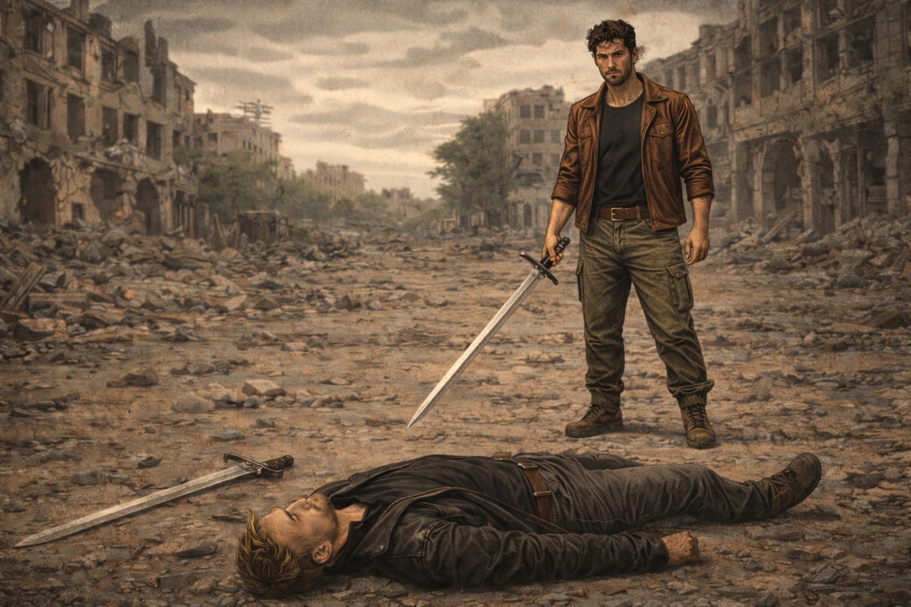

Роберт, мчащийся по пустынным улицам на своем мотоцикле, чувствовал ветер, свистящий в ушах, и вибрацию двигателя, передаваемую по всему телу. Обычно свобода, которую он ощущал во время поездок, была для него источником вдохновения и силы. Но сегодня что-то пошло не так. Внезапно ощущение головокружения начало захлестывать его сознание. Земля под ним словно начала плыть под ногами, а окружающий мир терял свою четкость и резкость.
С каждым метром пути усиливался охватывающий его страх. Он пытался успокоиться, сосредоточиться на дороге, но его попытки оказались тщетными. Наконец, Роберт решил остановиться. Он быстро огляделся: пустынные улицы были практически безлюдны, только тусклое освещение фонарей отражалось в его глазах.
Когда он заметил группу мужчин, вооруженных и выглядящих угрожающе, он понял, что паника не поможет. Собрав всю свою храбрость, Роберт решил подойти ближе, стараясь не показать свое беспокойство. Мужчины насторожились, когда заметили его приближение.
— Эй, кто ты? — спросил один из них, медленно поднимая оружие.
— Меня зовут Роберт. Я хочу поговорить, — ответил он, стараясь говорить ровно и уверенно.
И Роберт предложил им построить город для выживших, безопасное место для людей, вдали от всех опасностей. На его слова последовал громкий смех. Лидер группы, Алексей, с насмешкой на лице, сказал: — Город? Серьезно? В этом мире? Алексей выделялся среди остальных не только физической формой, но и своей манерой держаться. Высокий и коренастый, с аккуратно подстриженными светлыми волосами, он внушал страх и уважение. Его одежда была более качественной, чем у остальных мужчин, которые выглядели запущено и носили лохмотья. Алексей был символом силы и жестокости в этом беспощадном мире. Его уверенный взгляд и прямая осанка подчеркивали его статус лидера.
Роберт, хоть внутренне и дрожал, не сдался. Он объяснил, что у него есть план, ресурсы и люди, готовые помочь. Мужчины переглянулись между собой, и Алексей предложил проверить, на что Роберт способен. Он предложил дуэль на мечах.
Роберт, сознавая, что он хороший фехтовальщик, согласился. Дуэль началась, и он сосредоточился. Его сердце стучало в унисон с ритмом боя. Битва на мечах разразилась гремящим звоном стали, когда лезвия столкнулись. Роберт, с сосредоточенным и решительным взглядом, столкнулся с первым противником — крепким и агрессивным мужчиной. Ловко уклонившись от его жестокого удара, Роберт воспользовался открывшейся возможностью и точно провел резкий удар, выбив меч из рук соперника. Меч полетел в воздух, а сам мужчина, ошеломленный, оказался на земле, не в силах устоять перед мастерством Роберта.
Второй противник, более хитрый, попытался удивить его серией быстрых атак. Однако Роберт, обладая почти сверхъестественным спокойствием, двигался с грацией, предвосхищая каждый удар. В один миг он элегантно развернулся и, с едва заметным касанием, заставил меч второго соперника выскользнуть из его рук. Мужчина, дезориентированный, споткнулся и упал на землю, не в силах следовать за ритмом боя.
Третий противник, явно пьяный, подошел, пошатываясь, с глупой улыбкой на лице. Роберт, с сочетанием сострадания и веселья, решил не причинять ему вреда. Простым движением своего меча он отклонил неуклюжую атаку пьяницы, который, не удержав равновесия, упал на спину, смеясь, пока падал. Роберт, с улыбкой, понял, что иногда победа достигается не только силой, но и хитростью и умением «читать» своих противников.
Что касается меча Роберта, он был настоящим произведением искусства. Эта элегантная двусторонняя сабля, словно вышедшая из средневековых легенд, имела изящную рукоять, обмотанную кожей, и изогнутый клинок, который блестел в тусклом свете фонарей. Каждый изгиб и линия меча были продуманы до мелочей, что придавало ему не только эстетическую привлекательность, но и невероятную эффективность в бою. Клинок был острым, как бритва, а его двойное лезвие позволяло Роберту наносить удары с обеих сторон, что делало его опасным противником на поле боя.
Когда остался только Алексей, он шагнул вперед, его глаза горели решимостью. Роберт понимал, что это будет ключевой момент. Они обменивались ударами, напряжение нарастало. И тут Роберт применил неожиданный маневр, который сбил Алексея с толку, и тот упал на землю.
Роберт, стоя над поверженным противником, произнес: — Мне не нравится насилие. Я не хочу, чтобы это стало частью нашего будущего.
Алексей, удивленный, поднялся на колени и признал превосходство Роберта. Теперь, когда они установили взаимное уважение, Роберт начал объяснять, как он видит будущее города.
Лидер группы, пораженный его навыками, поднял руки в знак капитуляции. — Хорошо, ты доказал свою силу. Мы можем поговорить о твоих планах.
Роберт, чувствуя прилив уверенности, начал объяснять, как они могут объединить свои ресурсы и знания, чтобы построить крепость, где люди смогут жить в мире и помогать друг другу. Мужчины слушали его с интересом, и Алексей, теперь более открытый к идеям Роберта, сказал:
— Если ты действительно готов работать с нами, мы поможем тебе, но знай, что мы будем следить за тем, чтобы все шло по плану. Смотри, не разочаруй нас.
Роберт почувствовал невероятное облегчение и благодарность:
— Спасибо. Я не подведу вас. Вместе мы сможем достичь гораздо большего, чем по отдельности.
Мужчины разошлись, оставив Роберта наедине с тишиной ночного города. Он глубоко вдохнул, чувствуя, как напряжение начинает спадать. Но даже теперь, после всего этого, он никак не мог избавиться от ощущения нестабильности.
— Нужно действовать быстро, — подумал он, оглядываясь вокруг. — Время не на нашей стороне.
Роберт вернулся к своему мотоциклу, чувствуя, как головокружение начинает спадать. Он знал, что впереди его ждет множество испытаний, но также понимал, что этот первый шаг может изменить все. Виртуальность его плана начала переплетаться с реальностью, и он ощутил, что его миссия только начинается.